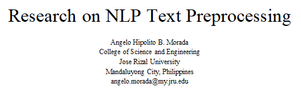

Topics
For the first topic we were refreshed on the topics of ITC C506 we talked about the basics when it comes to machine learning and what is Deep learning.
In this first topic Dr. Rodolfo Raga explained how AI works and what are its effects in the industry of IT, then we proceed what is machine learning and its types through the type we then proceeded
on the training process of machine learning and the explanation of Deep Learning and its nature.
For the second topic we talked NLP Text preprocessing this topic showed how to process text based data set this topic shows the common data collection, overview steps involving NLP and text preprocessing pipeline.
Text preprocessing consists of lower casing – Special Character Removal – Stopword Removal – Tokenization this is commonly done in order to clean the dataset and use it for machine learning data with
unprocessed data set it can lead to low output for the models so it is important to properly processed the data in order to create usable machine learning the has a good output.
The next topic Introduces Natural Language Processing or NLP this topic shows words representation by using NLP we the machine learning can understand each words in the text based dataset just like the second
we need to preprocess the data before we implement Text Representation which will help the model understand the words. With text representation it has three text representation techniques that one will count the frequency,
while the other understand the weight of the word and the last will find the position of the text in the sentence in the dataset.
The third topic explains the application of NLP applications in real world applications. it shows that NLP can be used when it comes to understanding sentence’s meaning and text classification which can be applied on social media
monitoring for Sentiment Analysis, chatbots on Question learning, language translation on Machine Translation, and lastly conversion of spoken words to written text for Speech to text. All of this can be done through
the application of NLP with the right training and dataset NLP can basically do all the thing mentioned.
The last topic for the prelims is named entity recognition or NER we were introduced to spacy a free open source python library that is use for NLP, a development focused library it is designed to process large amount of text volumes
to be later used by models. The processing pipeline consist of Tokenizer - Tagger - Parser - NER - … - Doc, with the use of the whole pipeline we can apply depending on the situation can turn a noisy raw dataset text into a structured
ready to use data.
Exercises
The First exercise was meant to create a E-portfolio to see our progress as the school year progresses. In this exercise I created a website that will hold all the topics, activities, quizzes, and exam that I will per terms, every end
of the term I will post the said objects in this website to be checked by our professor. I used a Simple Php web development kit for the website and add few things in the layout and design to make it my own.
In the second exercise we were tasked to understand the process of preprocessing a text base data in NLP, this gave us a glimpse of working in a realworld user generated data in my instance the data is about game review. We followed a well structured
pipeline made by our professor but I add a step where in the data has URL base text so I created an instance to remove the said URLs transforming a noisy and unprocessed data into cleaned and noise-free ready to use data. The activity taught me the
importance of preprocessing because with unprocessed data the model will badly perform and create unwanted output, but by processing the data the model can yield a wanted result and perform good results.

In the third exercise we were tasked to understand the different text representation techniques can be applied for the NLP that will then be converted to structured numerical data. In my understanding by applying Bag-of-Words, and
Term Frequency–Inverse Document Frequency (TF-IDF) we can set up the data for model use by turning text data into a numerical cleaned formed ready for models to use, the method has a special way of turning them into numerical format each of the methods
has a different perception when it comes to trade-offs between simplicity, interpretability, and efficiency. This activity shows me that the three methods used in this activity has their own use case scenario they have their own strengths and weaknesses
but thoroughly useful to the different industries that is applicable to them.

For the last activity of the preliminary period we were tasked to understand the importance of NER model in a organized and carful way. This evaluation how the model functioned well in an entity commonality such as place but perform inconsistent when it
comes to categories like numbers. From what I learned the activity showed that the behavior of the model varies depending on different data and improved its performance by proper tuning and preprocessing.
Exams
The exam consists of three questions, the first question was for our quiz, and the remaining questions are the exam itself. For the first question which is the quiz we were asked what the challenges were on getting the “golden standard data”
and the exam question that consist of two questions which is the importance of preprocessing for bag of words and the last question is the new NLP technique learned while we were doing the activities. In the first question I emphasized that
language was one of the challenges and the continued preprocess to achieve the golden standard for the dataset in order to achieve the standard the data must be continuously processed to achieve it and if the language is also include the process
is mostly doubled since we need to tune it before we continue. As for the first exam question, the gist of what I wrote is that the preprocess is important because an unprocessed data can yield to low performing model but with proper preprocess
it can yield good results and high-performance outcomes. And lastly for the last question since the dataset that I used had some URLs I have to add another technique to remove the URLs in the dataset so I create a process to remove them.
Learning Reflection
During this term we were taught the basics of processing text based data and its importance. I should take account the output of model is based on how the data is processed, if I were to used and unprocessed data and feed it to a model the expected
output would be and underperforming model with an unfavorable output but with the proper preprocessing and technique application the model will perform great and will yield a favorable output. Also I need to further understand the use of the first
model we used this term which is NER because the paper that I wrote seems to be rushed and understudied.